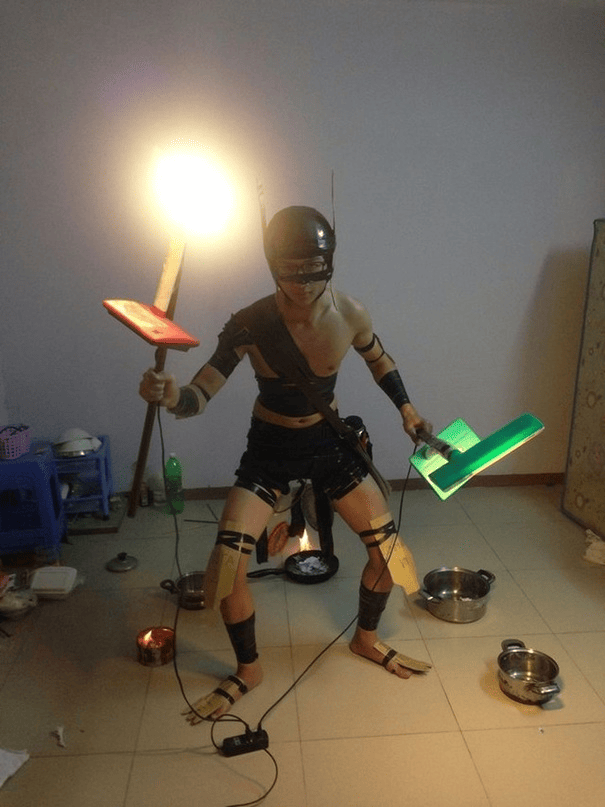

Shaman

Скиллы
-
Скилл 1: Ether Shock - Описание: Наносит урон врагам в области.
-
Скилл 2: Hex - Описание: Превращает врага в беззащитное существо на
короткое время.
-
Скилл 3: Shackles - Описание: Привязывает врага к месту и наносит урон.
-
Ультимейт: Mass Serpent Ward - Описание: Призывает змеек, которые
атакуют врагов.
Как играть
Стратегия игры за Shaman: Используйте Hex и Shackles для контроля врагов,
а Mass Serpent Ward для нанесения урона в командных боях. Играйте в
команде и старайтесь поддерживать своих союзников.
Назад к списку персонажей